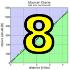

|  |  |
| pl | # | name | team | cat | time | mph | fph | age- adjusted score |
|---|---|---|---|---|---|---|---|---|
| 1 | 22 | Mary Ellen Allen | Sr's & Mr's of No Mercy | 50+++ | 104:01 | 10.61 | 2537 | 143.51 |
| 2 | 43 | Sindy Cho | Low-Key | Just Make It To The Top | 90:43 | 12.17 | 2909 | 133.51 |
| 3 | 17 | Lynn Sestak | LGBRC | 55+ | 104:51 | 10.53 | 2517 | 129.19 |
| 4 | 938 | Ivy Wang | 89:59 | 12.27 | 2933 | 125.25 | ||
| 5 | 401 | Shaena Berlin | MIT-West | 2 | 90:13 | 12.24 | 2926 | 124.92 |
| 6 | 221 | Christina King | Team CVC | 45+ | 112:47 | 9.79 | 2340 | 109.08 |
| 7 | 231 | Diniana Piekutowski | Stanford Cycling | 3.14+ 1 | 107:17 | 10.29 | 2460 | 104.52 |
| 8 | 37 | Kathleen Camp | LGBRC | 30+ | 114:26 | 9.65 | 2306 | 97.81 |
| 9 | 935 | Louise Wholey | wholey | Just Make It To The Top | 178:09 | 6.20 | 1482 | 93.28 |
| 10 | 249 | Dan Zhang | Team Cycling Panda | 35+ | 121:52 | 9.06 | 2166 | 92.84 |
| pl | # | name | team | cat | time | mph | fph | age- adjusted score |
|---|---|---|---|---|---|---|---|---|
| 1 | 936 | Eric Wohlberg | independant | 50+ | 73:41 | 14.98 | 3582 | 141.17 |
| 2 | 212 | Robert Easley | Sr's & Mr's of No Mercy | 45+ | 77:26 | 14.26 | 3409 | 132.92 |
| 3 | 90 | Bill Laddish | Team CVC | 45's | 75:51 | 14.56 | 3480 | 131.26 |
| 4 | 16 | Joe Fant | LGBRC | 55+ | 83:48 | 13.17 | 3150 | 130.93 |
| 5 | 603 | Blaise Hamel | Stanford & Sons | 3 | 73:54 | 14.94 | 3572 | 126.46 |
| 6 | 62 | Chris Evans | Stanford & Sons | 35+ | 74:00 | 14.92 | 3567 | 126.40 |
| 7 | 415 | Christian Paquet | Grumpy Old Men (GOM) | 55+ | 87:47 | 12.58 | 3007 | 125.46 |
| 8 | 420 | Zachary Ulissi | Stanford & Sons | 2 | 74:34 | 14.81 | 3540 | 125.30 |
| 9 | 126 | Stefano Profumo | Squadra SF | 35+ | 75:51 | 14.56 | 3480 | 124.37 |
| 10 | 931 | Juan Vasquez | San Jose Bike Club | 40+ | 77:39 | 14.22 | 3399 | 124.31 |
| 11 | 222 | Alexander Komlik | San Jose Bike Club | 50+ | 84:49 | 13.02 | 3112 | 124.10 |
| 12 | 20 | Bruno Acklin | Clagnuts | 55+ | 87:24 | 12.63 | 3020 | 123.00 |
| 13 | 39 | Paul Castonguay | Low-Key | 45+ | 83:33 | 13.21 | 3159 | 122.88 |
| 14 | 232 | Alex Poloziouk | Kovarus | 40+ | 78:30 | 14.06 | 3362 | 122.50 |
| 15 | 927 | Mike Scaglione | San Jose Bike Club | 50+ | 87:10 | 12.67 | 3028 | 121.46 |
| 16 | 71 | Scott Gammon | Legendary | 6 | 78:05 | 14.14 | 3380 | 119.50 |
| 17 | 612 | Matt Wocasek | Team Spokesman | 50+ | 87:38 | 12.60 | 3012 | 117.88 |
| 18 | 119 | Jim Perreira | San Jose Bike Club | 45+ | 86:50 | 12.71 | 3040 | 117.47 |
| 19 | 914 | Jason Kangas | Team Trail Head Cyclery | 35+ | 80:19 | 13.75 | 3286 | 116.55 |
| 20 | 922 | John Pidoli | Unattached | 50+ | 90:03 | 12.26 | 2931 | 115.81 |
| 21 | 918 | Greg McCullough | SVCS Specialized | 2 | 80:30 | 13.71 | 3279 | 115.81 |
| 22 | 906 | Steve Fielding | Icee | 45+ | 89:53 | 12.28 | 2936 | 115.29 |
| 23 | 309 | Scott Martin | Team Spokesman | 55+ | 95:19 | 11.58 | 2769 | 115.24 |
| 24 | 910 | Cesar Guillen | Evergreen | 40+ | 84:28 | 13.07 | 3125 | 114.35 |
| 25 | 933 | Conan Wen | Team Wheelsuckers | Junior | 84:29 | 13.07 | 3124 | 112.44 |
| 26 | 113 | Bill P | Clagnuts | 6 | 98:30 | 11.21 | 2680 | 111.17 |
| 27 | 116 | Frank Paysen | Chain Reaction | 55+ | 96:29 | 11.44 | 2736 | 110.91 |
| 28 | 213 | Rick Ferrell | Team Spokesman | 55+ | 98:03 | 11.26 | 2692 | 110.87 |
| 29 | 153 | Nils Tikkanen | Bike Trip | Thankful | 84:41 | 13.04 | 3117 | 109.93 |
| 30 | 304 | George Janour | Team Spokesman Santa Cruz | 45+ | 92:47 | 11.90 | 2845 | 107.23 |
| 31 | 156 | Alan Weatherall | San Jose Bike Club | 50+ | 98:34 | 11.20 | 2678 | 107.09 |
| 32 | 150 | Andy Sutterfield | San Jose State University | 25+ | 87:29 | 12.62 | 3017 | 106.35 |
| 33 | 87 | Larry Klein | Grumpy Old Men (GOM) | 55+ | 100:45 | 10.96 | 2620 | 106.05 |
| 34 | 133 | Cory Roay | Pen Velo/Pomodoro | 55+ | 104:22 | 10.58 | 2529 | 105.27 |
| 35 | 125 | Thomas Preisler | LGBRC | 60+ | 108:13 | 10.20 | 2439 | 103.60 |
| 36 | 701 | Mark Anderson | Bad Pacing | Unworthy Cat3 | 101:33 | 10.87 | 2599 | 102.42 |
| 37 | 170 | Christoph Erben | LGBRC | 45+ | 101:42 | 10.86 | 2595 | 98.68 |
| 38 | 902 | James Chang | Team Cycling Panda | 45+ | 100:31 | 10.98 | 2626 | 98.24 |
| 39 | 917 | Bing Liu | Team Cycling Panda | 60+ | 113:43 | 9.71 | 2321 | 98.19 |
| 40 | 23 | Richard Allen | Sr's & Mr's of No Mercy | 55+ | 121:26 | 9.09 | 2174 | 97.66 |
| 41 | 930 | Jeff Shute | 35+ | 96:27 | 11.45 | 2737 | 97.22 | |
| 42 | 928 | Eric Schmidt | Chairman | 95:58 | 11.50 | 2750 | 96.75 | |
| 43 | 65 | Andrew Fitzhugh | Stanford Cycling | 50+ | 108:18 | 10.19 | 2437 | 95.93 |
| 44 | 244 | Bernardo Tapia | Stanford Cycling | 40+ | 102:19 | 10.79 | 2580 | 94.63 |
| 45 | 925 | James Rainbow | Pen Velo/Pomodoro | 35+ | 101:52 | 10.84 | 2591 | 93.71 |
| 46 | 416 | Matt Redmond | MIT-West | ;DROP TABLE 'scores' -- | 99:06 | 11.14 | 2663 | 93.60 |
| 47 | 201 | Nigel Allen | Oso | 40+ | 103:34 | 10.66 | 2549 | 93.58 |
| 48 | 310 | Eric Nehrlich | Slow-Poke | 102:45 | 10.74 | 2569 | 93.35 | |
| 49 | 33 | Nicholas Brummell | Atlas | 50+ And Broken | 113:36 | 9.72 | 2323 | 92.84 |
| 50 | 85 | Rupesh Kapoor | Slightly Old | 107:17 | 10.29 | 2460 | 92.28 | |
| 51 | 29 | Bernard Bell | PBCC | 55+ | 116:30 | 9.48 | 2266 | 91.69 |
| 52 | 69 | Brad Fox | LGBRC | 30+ | 101:11 | 10.91 | 2609 | 91.53 |
| 53 | 909 | Lyubomir Grigorov | Riders only | 20+ | 102:08 | 10.81 | 2584 | 90.85 |
| 54 | 218 | David Kelly | Team Kelly | Out Of Shape Dads | 104:14 | 10.59 | 2532 | 90.38 |
| 55 | 250 | Ye Zhang | Team Cycling Panda | Just Make It To The Top | 102:51 | 10.73 | 2566 | 90.01 |
| 56 | 158 | Han Wen | Grumpy Old Men (GOM) | 45+ | 112:05 | 9.85 | 2355 | 89.38 |
| 57 | 223 | Pavel Krivenko | Stanford Cycling | Group 5 | 108:09 | 10.21 | 2440 | 85.47 |
| 58 | 912 | Joel Headley | 35+ | 114:21 | 9.65 | 2308 | 82.20 | |
| 59 | 913 | Isaac Hong | Team Wheelsuckers | Junior | 120:33 | 9.16 | 2189 | 78.20 |
| 60 | 901 | Sam Burnett | SF2G | Just Make It To The Starting Line On Time | 119:01 | 9.28 | 2218 | 77.46 |
| 61 | 137 | David Salazar | Stanford Cycling | 25+ | 128:19 | 8.60 | 2057 | 71.69 |
| 62 | 934 | James Wholey | wholey | Just Make It To The Top | 182:11 | 6.06 | 1449 | 66.17 |
| pl | # | name | team | cat | time | mph | fph | age- adjusted score |
|---|---|---|---|---|---|---|---|---|
| 1 | 101 | Paul McKenzie | Sr's & Mr's of No Mercy | 60+ | 96:31 | 11.44 | 2735 | 117.01 |
| 929 | Sarah Schroer | Sr's & Mr's of No Mercy | 40+ | |||||
| 2 | 55 | Emma Dixon | 35+ | 99:57 | 11.05 | 2641 | 115.05 | |
| 56 | Jonathan Dixon | 35+ |
| pl | # | name | team | cat | time | mph | fph | age- adjusted score |
|---|---|---|---|---|---|---|---|---|
| 1 | 6 | Bill Bushnell | Low-Key | Recumbent | 54:58 | 20.08 | 4802 | 98.10 |
| pl | team | age- adjusted score |
riders |
|---|---|---|---|
| 1 | Sr's & Mr's of No Mercy | 401.01 | Paul McKenzie, Richard Allen, Robert Easley, Mary Ellen Allen, Sarah Schroer |
| 2 | Stanford & Sons | 378.16 | Blaise Hamel, Zachary Ulissi, Chris Evans |
| 3 | San Jose Bike Club | 369.87 | Alan Weatherall, Mike Scaglione, Juan Vasquez, Jim Perreira, Alexander Komlik |
| 4 | LGBRC | 363.72 | Christoph Erben, Thomas Preisler, Lynn Sestak, Brad Fox, Kathleen Camp, Joe Fant |
| 5 | Low-Key | 354.48 | Paul Castonguay, Sindy Cho, Bill Bushnell |
| 6 | Team Spokesman | 344.00 | Rick Ferrell, Scott Martin, Matt Wocasek |
| 7 | Grumpy Old Men (GOM) | 320.89 | Han Wen, Larry Klein, Christian Paquet |
| 8 | 309.01 | Eric Schmidt, Jonathan Dixon, Emma Dixon, Jeff Shute, Rupesh Kapoor, Eric Nehrlich, Joel Headley | |
| 9 | Stanford Cycling | 295.07 | Diniana Piekutowski, Bernardo Tapia, David Salazar, Pavel Krivenko, Andrew Fitzhugh |
| 10 | Team Cycling Panda | 289.27 | Bing Liu, James Chang, Ye Zhang, Dan Zhang |
| 11 | Team CVC | 240.34 | Christina King, Bill Laddish |
| 12 | Clagnuts | 234.17 | Bruno Acklin, Bill P |
| 13 | MIT-West | 218.51 | Matt Redmond, Shaena Berlin |
| 14 | Pen Velo/Pomodoro | 198.98 | James Rainbow, Cory Roay |
| 15 | Team Wheelsuckers | 190.64 | Conan Wen, Isaac Hong |
| 16 | wholey | 159.45 | Louise Wholey, James Wholey |
| 17 | independant | 141.17 | Eric Wohlberg |
| 18 | Squadra SF | 124.37 | Stefano Profumo |
| 19 | Kovarus | 122.50 | Alex Poloziouk |
| 20 | Legendary | 119.50 | Scott Gammon |
| 21 | Team Trail Head Cyclery | 116.55 | Jason Kangas |
| 22 | Unattached | 115.81 | John Pidoli |
| 22 | SVCS Specialized | 115.81 | Greg McCullough |
| 24 | Icee | 115.29 | Steve Fielding |
| 25 | Evergreen | 114.35 | Cesar Guillen |
| 26 | Chain Reaction | 110.91 | Frank Paysen |
| 27 | Bike Trip | 109.93 | Nils Tikkanen |
| 28 | Team Spokesman Santa Cruz | 107.23 | George Janour |
| 29 | San Jose State University | 106.35 | Andy Sutterfield |
| 30 | Bad Pacing | 102.42 | Mark Anderson |
| 31 | Oso | 93.58 | Nigel Allen |
| 32 | Atlas | 92.84 | Nicholas Brummell |
| 33 | PBCC | 91.69 | Bernard Bell |
| 34 | Riders only | 90.85 | Lyubomir Grigorov |
| 35 | Team Kelly | 90.38 | David Kelly |
| 36 | SF2G | 77.46 | Sam Burnett |